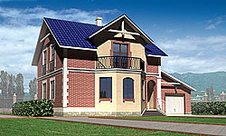

Категории проектов
- Проекты таунхаусов и блокированных домов
- Проекты домов на две семьи
- Проекты узких домов
- Проекты бань
Каталог архитектурных проектов
- Проекты кирпичных домов
- Проекты домов из газобетона и пенобетона
- Проекты домов из бруса и бревна
- Проекты каркасных домов
Площади домов
- до 150 м2
- от 150 до 250 м2
- от 250 до 400 м2
- от 400 м2
Каталог архитектурных проектов
Проекты для Вашего будущего дома

Каталог готовых архитектурных проектов коттеджей myhouse.ru явился результатом многолетней работы лучших российских специалистов в области архитектуры и строительства.
Это своего рода «Собрание сочинений» от современной загородной архитектуры, в котором каждый может найти что-то свое.
Проекты коттеджей из каталога нельзя называть типовыми, поскольку разрабатывались они в порядке индивидуального проектирования непосредственно под нужды будущих владельцев загородных домов.Более 95% проектов реализовано в строительстве. Большая часть проектов реализована неоднократно, как в Московской области, так и по всей территории Российской Федерации, в странах ближнего зарубежья.
Экономическая составляющая и вопросы престижа не менее важны при выборе проекта дома. Разброс проектных площадей - велик. В настоящее время это дома от 50 до 1300 м2 общей площади. Часть из них можно отнести к дачам, в то время, как другую, смело причислить к образцам великолепной дворцовой архитектуры. Разумеется, средние по размерам проекты представлены наиболее полно и отражают все тенденции в современном коттеджном строительстве.
Проекты домов
- Проекты кирпичных домов
- Проекты домов из газобетона и пенобетона
- Проекты домов из бруса и бревна
- Проекты каркасных домов
Площади домов
- до 150 м2
- от 150 до 250 м2
- от 250 до 400 м2
- от 400 м2